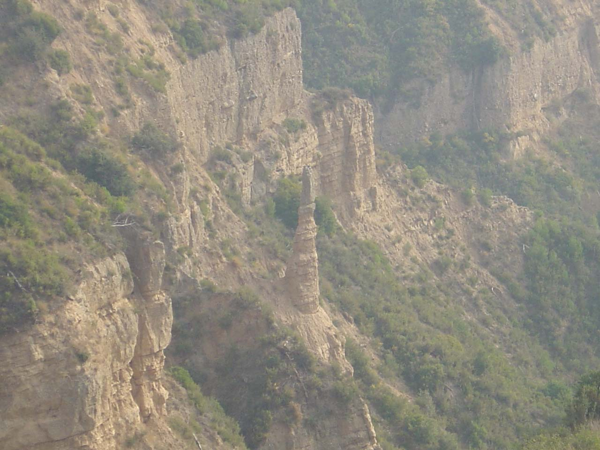
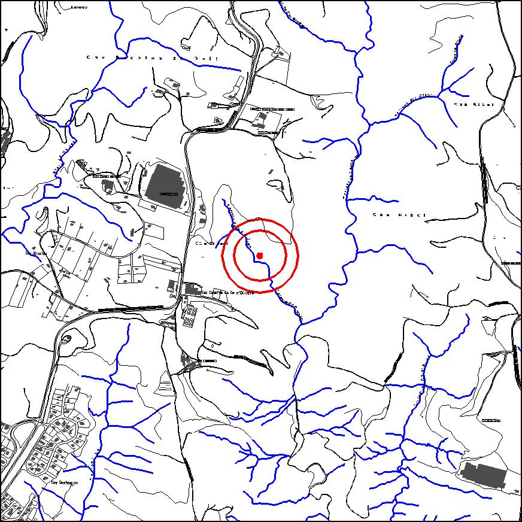

|  |  |
Nom de l’element: Pilar coronat (Dame coiffée) de Ca n’Oliveró
Clau d’identificació: C.05
Nucli o indret: Proper a Can Nicolau de Dalt.
UTM: X= 414.201, Y= 4.595.050.
Règim del sòl: Sòl no urbanitzable.
1.1 Característiques:
Formació geològica caracteritzada per tenir forma d’agulla o pilar. Aquest element s’ha format degut a l’acció erosiva de l’aire i de la pluja sobre uns materials argilosos, coberts per un material no erosionable. Aquest fet ha provocat que els agents erosius hagin anat erosionant els materials pels laterals, mentre que per la part situada per sota de la roca no erosionable ha romàs intacte, de manera que s’ha generat aquest forma de columna.
1.2. Estat de conservació:
Molt bo, però en procés d’erosió.
1.3. Ús actual:
Formació geològica.
1.4. Accés:
No és possible un accés fins al mateix pilar coronat, doncs es troba en un barranc. Però es pot observar des de la benzinera de Can Nicolau de Dalt.
Formació d’interès geològic poc abundant.
3.1. Usos admesos:
Espais lliures.
3.2. Condicions d’ordenació:
Segons Pla Especial a redactar.
3.3. Accés
No s’hi pot accedir.
BPU (Bé Protegit Urbanísticament)